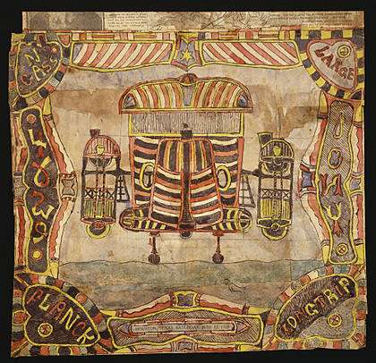

Sunday, January the 24th, 2010
back to: title, date or indexes
“Detailed and annotated mixed-media images of heroic flying machines—Barnum and Bailey, Buck Rogers and Jules Verne all stirred together—mazes of exotic detail, circus-tent gas-bags, bicycle wheels, belts and pulleys—crazily painted pods shaped like the space shuttle boosters…”
The work of Charles Dellschau, a Prussian butcher resident in Texas, and member of the Sonora Aero Club secret society, obsessed with airships. Read a potted biography here, and look at some gorgeous pictures here. And for the next few weeks, those of you in or visiting London can see original works at the Museum Of Everything.
